Two Hundred Fifty Fils
Large Type
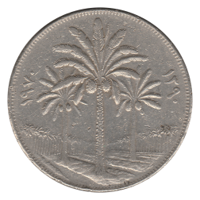 1390 / 1970 FAO
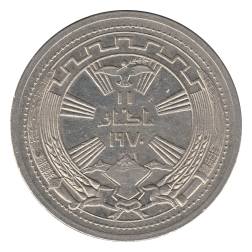 1391 / 1971 Peace with Kurds
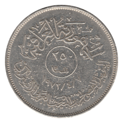 1392 / 1972 Ba'ath Party
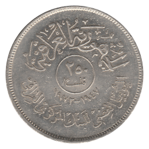 1392 / 1972 Central Bank
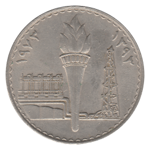 1393 / 1973 Oil Nationalization
Small Type
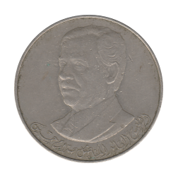 1400 / 1980 Saddam Hussein
8-Sided Type
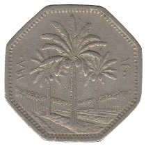 1400 / 1980
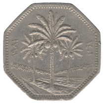 1401 / 1981
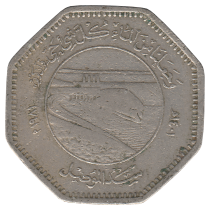 1401 / 1981 FAO
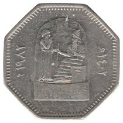 1402 / 1982 Restoration of Babel
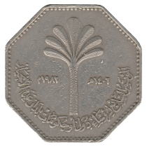 1402 / 1982 Non-Aligned Conference
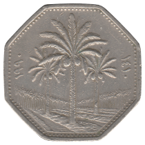 1410 / 1990
Back to Kingdom of Iraq
Back to Iraq Main Page
Back to Home